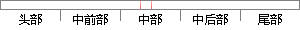

videoGravity = AVLayerVideoGravityResizeAspect;
片段位置图

相似结果|
1
原句片段： videoGravity = AVLayerVideoGravityResizeAspect;
相似片段 1：最后查找到使用其中一个叫videoGravity 的属性,默认设置了AVLayerVideoGravityResize...第1种模式AVLayerVideoGravityResizeAspect是按原视频比例显示,是竖屏的就显示出...
相似片段 2：/** AVPlayerLayer的videoGravity属性设置 AVLayerVideoGravityResize, // 非均匀模式。两个维度完全填充至整个视图区域 AVLayerVideoGravityResizeAspect, // 等比例...
相似片段 3：使用其中一个叫 videoGravity 的属性,默认设置了AVLayerVideoGravityResize,查看该属性以及相关的其他属性值发现有3种值可以设置, AVLayerVideoGravityResizeAspect AV...
|
※ 片段修改建议 ※
近似词参考：